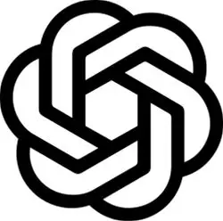
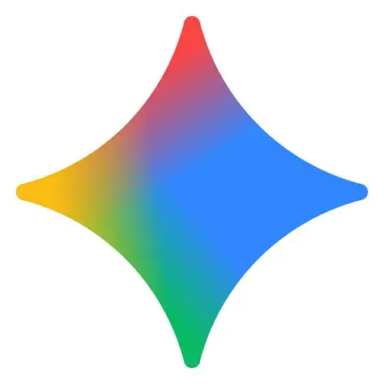
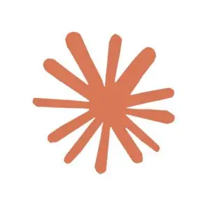
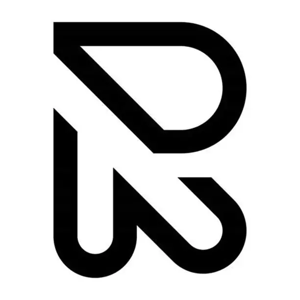
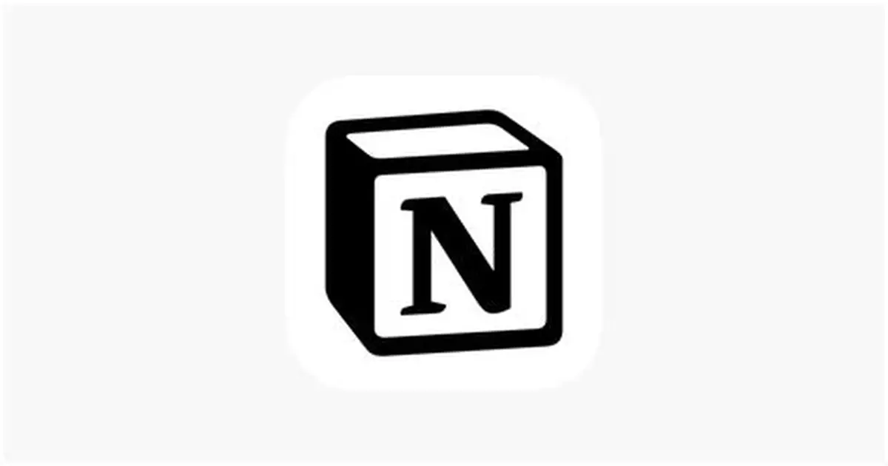

POWER AT YOUR FINGERTIPS
Top AI Tools
The most powerful AI tools available today — each one capable of transforming how you work, create, and build. These are the instruments of the intelligence revolution.

ChatGPT
Conversational AI · Code · Writing
OpenAI's flagship AI assistant — the product that sparked the generative AI revolution. ChatGPT can write essays, debug code, analyze data, generate images, browse the web, run code, and engage in expert-level conversation on virtually any topic. GPT-4o represents a quantum leap in reasoning, multimodal understanding, and response speed.
Advanced Reasoning
Code Interpreter
Image Generation
Web Browsing
Voice Mode
Custom GPTs

Gemini
Multimodal AI · Google Ecosystem
Google DeepMind's most capable AI model — deeply integrated into the Google ecosystem. Gemini Ultra excels at complex reasoning, multimodal tasks, and scientific analysis. With access to Google Search, Gmail, Docs, and Drive, it creates the most integrated AI experience for productivity users. Gemini 2.0 sets new benchmarks across every evaluation.
1M Token Context
Google Integration
Code Generation
Image Understanding
Real-time Search

Claude
Analysis · Writing · Coding · Safety
Anthropic's AI assistant, built with Constitutional AI for safety and reliability. Claude excels at nuanced analysis, long-form writing, complex reasoning, and coding tasks. With a 200K token context window, it processes entire books, codebases, and datasets in one conversation. Claude is widely regarded as the most thoughtful, nuanced, and trustworthy AI assistant — the choice of professionals and researchers who demand accuracy.
200K Context Window
Constitutional AI
Code Generation
Document Analysis
Research Mode
Midjourney
AI Image Generation · Art · Design
The gold standard of AI image generation — Midjourney produces breathtaking, photorealistic and artistic images from text prompts with unmatched aesthetic quality. Used by artists, designers, film studios, and advertising agencies worldwide. V6 introduced unprecedented photorealism and prompt coherence. No other tool matches Midjourney's artistic sensibility and visual quality.
Photorealistic Output
Style Control
Upscaling
Inpainting
Web Interface

Leonardo AI
Image Generation · Game Assets · Design
Leonardo AI is the professional's choice for AI image generation — offering fine-grained control over style, character consistency, and asset creation. Beloved by game developers, concept artists, and digital creators for its ability to maintain visual consistency across multiple generations. Features like Canvas, Motion, and 3D Texture Generation make it a comprehensive creative suite.
Character Consistency
Fine-tune Models
Canvas Editor
Animation
3D Textures

Runway ML
AI Video Generation · Film · VFX
Runway is the Hollywood of AI — a suite of multimodal AI tools for video generation, editing, and visual effects. Gen-3 Alpha produces cinematic quality AI video from text and image prompts. Used in professional film productions, music videos, and advertising campaigns. Runway is redefining post-production with features like AI background removal, motion tracking, and infinite canvas.
Text-to-Video
Image-to-Video
Video Editing
Green Screen AI
Motion Brush

Perplexity AI
AI Search · Research · Citations
Perplexity reimagines search as an AI-powered research assistant. Unlike traditional search engines, it reads and synthesizes sources, providing cited, comprehensive answers to complex questions. Its Pro Search mode conducts deep multi-step research with follow-up queries. Considered the most powerful research tool for staying current with fast-moving fields like AI, science, and technology.
Real-time Web Search
Source Citations
Deep Research Mode
Academic Papers
File Upload

GitHub Copilot
AI Coding Assistant · Developer Tool
GitHub Copilot is the world's most widely used AI coding assistant — integrated directly into VS Code, JetBrains, and other IDEs. It autocompletes code, suggests entire functions, writes tests, explains code, and helps debug. Powered by OpenAI Codex and GPT-4, Copilot has been adopted by millions of developers who report 55% faster task completion and dramatically reduced cognitive load.
Code Autocomplete
Chat in IDE
Test Generation
Bug Detection
PR Summaries

Notion AI
Productivity AI · Writing · Workspace
Notion AI transforms the world's most popular knowledge management platform into an AI-powered workspace. It summarizes meeting notes, drafts documents, answers questions from your knowledge base, and automates repetitive writing tasks. For teams, Notion AI turns a database of documents into a searchable, queryable intelligence system — making institutional knowledge instantly accessible to every team member.
Document Drafting
Meeting Summaries
Q&A on Workspace
Auto-fill Tables
Translate Content
Sora AI
Text-to-Video · World Simulation
OpenAI's Sora represents a quantum leap in AI video generation — creating photorealistic, cinematic video up to 60 seconds from text descriptions. Sora doesn't just generate frames; it simulates physical worlds with coherent physics, lighting, and motion. Film directors, content creators, and advertisers are already using it to create productions that would have cost millions. Sora signals the end of the gap between imagination and visual reality.
60-sec HD Video
Physics Simulation
Cinematic Quality
Multiple Styles
Image Animation